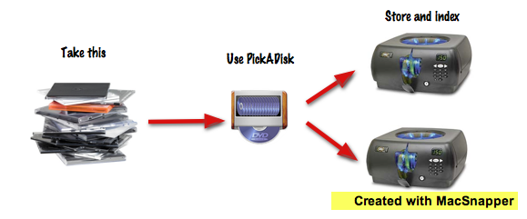
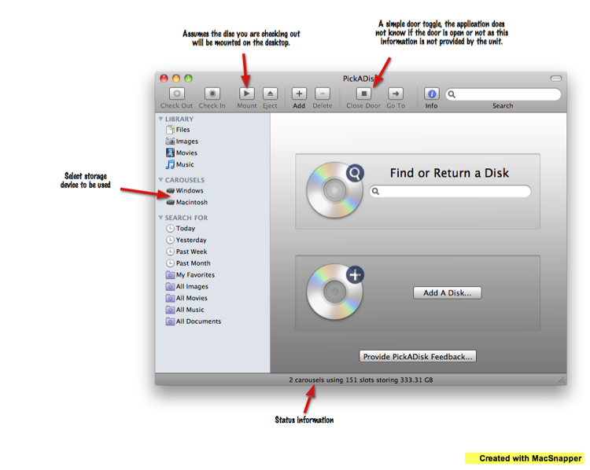
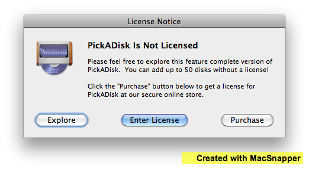
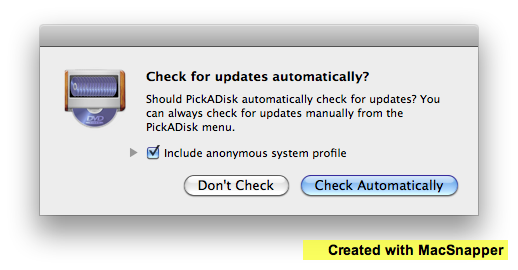

PickADisk QuickStart
1. Organize your disc collection
2. PickADisk Startup Window
3. License Notice
4. Check for updates window
Adding a disc
Find a disc
Preferences
Main window view
License
1
Organize your disc collection

PickADisk is a application to store and index your disc collection into DC-101 and DC-300 carousels.
2
PickADisk Startup Window

This is the PickADisk startup window.
Some of the more non-obvious parts are described and will be discussed in later slides.
3
License Notice

Upon first startup of PickADisk you will receive this dialog. Click on the appropriate button.
4
Check for updates window

This dialog will be shown on the 2nd launch of the application.